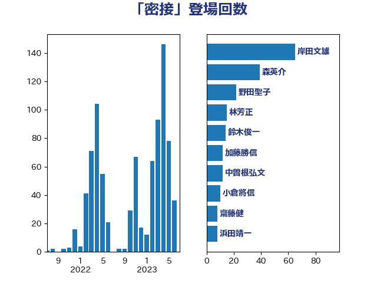

単語「密接」

| 岸田文雄 | 自由民主党 | 65 回 |
| 森英介 | 自由民主党 | 39 回 |
| 野田聖子 | 自由民主党 | 22 回 |
| 林芳正 | 自由民主党 | 15 回 |
| 鈴木俊一 | 自由民主党 | 14 回 |
| 加藤勝信 | 自由民主党 | 12 回 |
| 中曽根弘文 | 自由民主党 | 12 回 |
| 小倉將信 | 自由民主党 | 10 回 |
| 齋藤健 | 自由民主党 | 8 回 |
| 浜田靖一 | 自由民主党 | 8 回 |
| 後藤茂之 | 自由民主党 | 8 回 |
| 西村康稔 | 自由民主党 | 7 回 |
| 河野太郎 | 自由民主党 | 7 回 |
| 末松信介 | 自由民主党 | 7 回 |
| 山添拓 | 日本共産党 | 7 回 |
| 小西洋之 | 立憲民主党 | 7 回 |
| 小林鷹之 | 自由民主党 | 7 回 |
| 谷公一 | 自由民主党 | 6 回 |
| 永岡桂子 | 自由民主党 | 6 回 |
| 松野博一 | 自由民主党 | 6 回 |
| 松本剛明 | 自由民主党 | 6 回 |
| 上田清司 | 国民民主党 | 6 回 |
| 音喜多駿 | 日本維新の会 | 5 回 |
| 金子恭之 | 自由民主党 | 5 回 |
| 牧山ひろえ | 立憲民主党 | 5 回 |
| 斉藤鉄夫 | 公明党 | 5 回 |
| 川田龍平 | 立憲民主党 | 5 回 |
| 伊波洋一 | 無所属 | 5 回 |
| 西岡秀子 | 国民民主党 | 4 回 |
| 舟山康江 | 国民民主党 | 4 回 |
| 石橋通宏 | 立憲民主党 | 4 回 |
| 渡辺周 | 立憲民主党 | 4 回 |
| 泉健太 | 立憲民主党 | 4 回 |
| 新藤義孝 | 自由民主党 | 4 回 |
| 安江伸夫 | 公明党 | 4 回 |
| 大塚耕平 | 国民民主党 | 4 回 |
| 堀場幸子 | 日本維新の会 | 4 回 |
| こやり隆史 | 自由民主党 | 4 回 |
| 青山大人 | 立憲民主党 | 3 回 |
| 階猛 | 立憲民主党 | 3 回 |
| 阿部弘樹 | 日本維新の会 | 3 回 |
| 西銘恒三郎 | 自由民主党 | 3 回 |
| 米山隆一 | 立憲民主党 | 3 回 |
| 篠原豪 | 立憲民主党 | 3 回 |
| 福島みずほ | 社会民主党 | 3 回 |
| 神谷裕 | 立憲民主党 | 3 回 |
| 神津たけし | 立憲民主党 | 3 回 |
| 田村貴昭 | 日本共産党 | 3 回 |
| 田村智子 | 日本共産党 | 3 回 |
| 田名部匡代 | 立憲民主党 | 3 回 |
| 玉木雄一郎 | 国民民主党 | 3 回 |
| 水野素子 | 立憲民主党 | 3 回 |
| 榛葉賀津也 | 国民民主党 | 3 回 |
| 打越さく良 | 立憲民主党 | 3 回 |
| 山田勝彦 | 立憲民主党 | 3 回 |
| 山岸一生 | 立憲民主党 | 3 回 |
| 山口壯 | 自由民主党 | 3 回 |
| 太栄志 | 立憲民主党 | 3 回 |
| 古川禎久 | 自由民主党 | 3 回 |
| 伊藤孝恵 | 国民民主党 | 3 回 |
| おおつき紅葉 | 立憲民主党 | 3 回 |
| 高木かおり | 日本維新の会 | 2 回 |
| 馬淵澄夫 | 立憲民主党 | 2 回 |
| 足立康史 | 日本維新の会 | 2 回 |
| 赤嶺政賢 | 日本共産党 | 2 回 |
| 西田昌司 | 自由民主党 | 2 回 |
| 西村明宏 | 自由民主党 | 2 回 |
| 葉梨康弘 | 自由民主党 | 2 回 |
| 萩生田光一 | 自由民主党 | 2 回 |
| 石井苗子 | 日本維新の会 | 2 回 |
| 矢倉克夫 | 公明党 | 2 回 |
| 浜地雅一 | 公明党 | 2 回 |
| 河西宏一 | 公明党 | 2 回 |
| 梅谷守 | 立憲民主党 | 2 回 |
| 梅村みずほ | 日本維新の会 | 2 回 |
| 本田顕子 | 自由民主党 | 2 回 |
| 新垣邦男 | 立憲民主党 | 2 回 |
| 徳永エリ | 立憲民主党 | 2 回 |
| 平木大作 | 公明党 | 2 回 |
| 岸真紀子 | 立憲民主党 | 2 回 |
| 岬麻紀 | 日本維新の会 | 2 回 |
| 岡田直樹 | 自由民主党 | 2 回 |
| 山本左近 | 自由民主党 | 2 回 |
| 山崎正恭 | 公明党 | 2 回 |
| 山岡達丸 | 立憲民主党 | 2 回 |
| 宮本徹 | 日本共産党 | 2 回 |
| 宮本岳志 | 日本共産党 | 2 回 |
| 奥野総一郎 | 立憲民主党 | 2 回 |
| 大西健介 | 立憲民主党 | 2 回 |
| 大岡敏孝 | 自由民主党 | 2 回 |
| 塩田博昭 | 公明党 | 2 回 |
| 城井崇 | 立憲民主党 | 2 回 |
| 吉良州司 | 無所属 | 2 回 |
| 吉田統彦 | 立憲民主党 | 2 回 |
| 中島克仁 | 立憲民主党 | 2 回 |
| 下野六太 | 公明党 | 2 回 |
| 高橋光男 | 公明党 | 1 回 |
| 高木啓 | 自由民主党 | 1 回 |
| 青柳仁士 | 日本維新の会 | 1 回 |
| 阿部知子 | 立憲民主党 | 1 回 |
| 阿部司 | 日本維新の会 | 1 回 |
| 長友慎治 | 国民民主党 | 1 回 |
| 鈴木馨祐 | 自由民主党 | 1 回 |
| 鈴木貴子 | 自由民主党 | 1 回 |
| 鈴木英敬 | 自由民主党 | 1 回 |
| 鈴木庸介 | 立憲民主党 | 1 回 |
| 金村龍那 | 日本維新の会 | 1 回 |
| 金子恵美 | 立憲民主党 | 1 回 |
| 野間健 | 立憲民主党 | 1 回 |
| 野田佳彦 | 立憲民主党 | 1 回 |
| 遠藤良太 | 日本維新の会 | 1 回 |
| 進藤金日子 | 自由民主党 | 1 回 |
| 逢坂誠二 | 立憲民主党 | 1 回 |
| 近藤昭一 | 立憲民主党 | 1 回 |
| 辻元清美 | 立憲民主党 | 1 回 |
| 輿水恵一 | 公明党 | 1 回 |
| 赤木正幸 | 日本維新の会 | 1 回 |
| 谷川とむ | 自由民主党 | 1 回 |
| 角田秀穂 | 公明党 | 1 回 |
| 西野太亮 | 自由民主党 | 1 回 |
| 落合貴之 | 立憲民主党 | 1 回 |
| 荒井優 | 立憲民主党 | 1 回 |
| 茂木敏充 | 自由民主党 | 1 回 |
| 若宮健嗣 | 自由民主党 | 1 回 |
| 船田元 | 自由民主党 | 1 回 |
| 舞立昇治 | 自由民主党 | 1 回 |
| 自見はなこ | 自由民主党 | 1 回 |
| 羽生田俊 | 自由民主党 | 1 回 |
| 美延映夫 | 日本維新の会 | 1 回 |
| 緑川貴士 | 立憲民主党 | 1 回 |
| 細田健一 | 自由民主党 | 1 回 |
| 簗和生 | 自由民主党 | 1 回 |
| 笠井亮 | 日本共産党 | 1 回 |
| 竹詰仁 | 国民民主党 | 1 回 |
| 竹内真二 | 公明党 | 1 回 |
| 穀田恵二 | 日本共産党 | 1 回 |
| 秋野公造 | 公明党 | 1 回 |
| 秋葉賢也 | 自由民主党 | 1 回 |
| 福島伸享 | 無所属 | 1 回 |
| 福山哲郎 | 立憲民主党 | 1 回 |
| 神谷宗幣 | 参政党 | 1 回 |
| 石橋林太郎 | 自由民主党 | 1 回 |
| 石原宏高 | 自由民主党 | 1 回 |
| 石井準一 | 自由民主党 | 1 回 |
| 田畑裕明 | 自由民主党 | 1 回 |
| 田村まみ | 国民民主党 | 1 回 |
| 田島麻衣子 | 立憲民主党 | 1 回 |
| 牧島かれん | 自由民主党 | 1 回 |
| 熊谷裕人 | 立憲民主党 | 1 回 |
| 源馬謙太郎 | 立憲民主党 | 1 回 |
| 湯原俊二 | 立憲民主党 | 1 回 |
| 渡辺創 | 立憲民主党 | 1 回 |
| 清水真人 | 自由民主党 | 1 回 |
| 浜田聡 | NHK党 | 1 回 |
| 浜口誠 | 国民民主党 | 1 回 |
| 浅野哲 | 国民民主党 | 1 回 |
| 泉田裕彦 | 自由民主党 | 1 回 |
| 河野義博 | 公明党 | 1 回 |
| 沢田良 | 日本維新の会 | 1 回 |
| 池田佳隆 | 自由民主党 | 1 回 |
| 水岡俊一 | 立憲民主党 | 1 回 |
| 武見敬三 | 自由民主党 | 1 回 |
| 武井俊輔 | 自由民主党 | 1 回 |
| 櫻井周 | 立憲民主党 | 1 回 |
| 櫛渕万里 | れいわ新選組 | 1 回 |
| 橋本岳 | 自由民主党 | 1 回 |
| 横沢高徳 | 立憲民主党 | 1 回 |
| 森屋隆 | 立憲民主党 | 1 回 |
| 柚木道義 | 立憲民主党 | 1 回 |
| 松木けんこう | 立憲民主党 | 1 回 |
| 東徹 | 日本維新の会 | 1 回 |
| 杉尾秀哉 | 立憲民主党 | 1 回 |
| 杉久武 | 公明党 | 1 回 |
| 本庄知史 | 立憲民主党 | 1 回 |
| 末次精一 | 立憲民主党 | 1 回 |
| 木村英子 | れいわ新選組 | 1 回 |
| 木原稔 | 自由民主党 | 1 回 |
| 星野剛士 | 自由民主党 | 1 回 |
| 早稲田ゆき | 立憲民主党 | 1 回 |
| 早坂敦 | 日本維新の会 | 1 回 |
| 日下正喜 | 公明党 | 1 回 |
| 斎藤アレックス | 国民民主党 | 1 回 |
| 庄子賢一 | 公明党 | 1 回 |
| 川崎ひでと | 自由民主党 | 1 回 |
| 岩谷良平 | 日本維新の会 | 1 回 |
| 岩渕友 | 日本共産党 | 1 回 |
| 岡本三成 | 公明党 | 1 回 |
| 山田宏 | 自由民主党 | 1 回 |
| 山本剛正 | 日本維新の会 | 1 回 |
| 山井和則 | 立憲民主党 | 1 回 |
| 尾身朝子 | 自由民主党 | 1 回 |
| 小野田紀美 | 自由民主党 | 1 回 |
| 小野泰輔 | 日本維新の会 | 1 回 |
| 小沢雅仁 | 立憲民主党 | 1 回 |
| 小池晃 | 日本共産党 | 1 回 |
| 小林一大 | 自由民主党 | 1 回 |
| 小宮山泰子 | 立憲民主党 | 1 回 |
| 宮路拓馬 | 自由民主党 | 1 回 |
| 宮本周司 | 自由民主党 | 1 回 |
| 宮崎政久 | 自由民主党 | 1 回 |
| 守島正 | 日本維新の会 | 1 回 |
| 奥下剛光 | 日本維新の会 | 1 回 |
| 大野敬太郎 | 自由民主党 | 1 回 |
| 塩村あやか | 立憲民主党 | 1 回 |
| 塩川鉄也 | 日本共産党 | 1 回 |
| 堀井巌 | 自由民主党 | 1 回 |
| 坂本祐之輔 | 立憲民主党 | 1 回 |
| 土屋品子 | 自由民主党 | 1 回 |
| 和田義明 | 自由民主党 | 1 回 |
| 吉田宣弘 | 公明党 | 1 回 |
| 吉田はるみ | 立憲民主党 | 1 回 |
| 古川俊治 | 自由民主党 | 1 回 |
| 友納理緒 | 自由民主党 | 1 回 |
| 原口一博 | 立憲民主党 | 1 回 |
| 北神圭朗 | 無所属 | 1 回 |
| 北側一雄 | 公明党 | 1 回 |
| 加藤鮎子 | 自由民主党 | 1 回 |
| 前川清成 | 日本維新の会 | 1 回 |
| 冨樫博之 | 自由民主党 | 1 回 |
| 倉林明子 | 日本共産党 | 1 回 |
| 佐藤英道 | 公明党 | 1 回 |
| 伊藤岳 | 日本共産党 | 1 回 |
| 伊藤孝江 | 公明党 | 1 回 |
| 伊佐進一 | 公明党 | 1 回 |
| 仁比聡平 | 日本共産党 | 1 回 |
| 井上哲士 | 日本共産党 | 1 回 |
| 丹羽秀樹 | 自由民主党 | 1 回 |
| 串田誠一 | 日本維新の会 | 1 回 |
| 中田宏 | 自由民主党 | 1 回 |
| 中根一幸 | 自由民主党 | 1 回 |
| 中川宏昌 | 公明党 | 1 回 |
| 中山展宏 | 自由民主党 | 1 回 |
| 上田勇 | 公明党 | 1 回 |
| 三上えり | 立憲民主党 | 1 回 |
| たがや亮 | れいわ新選組 | 1 回 |